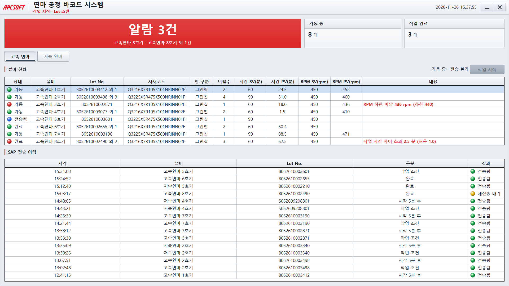
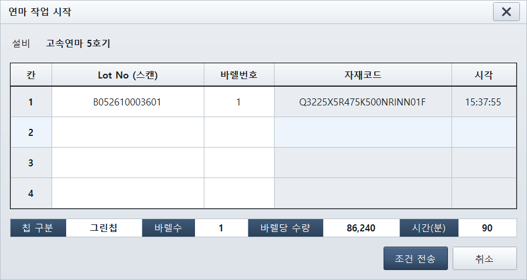
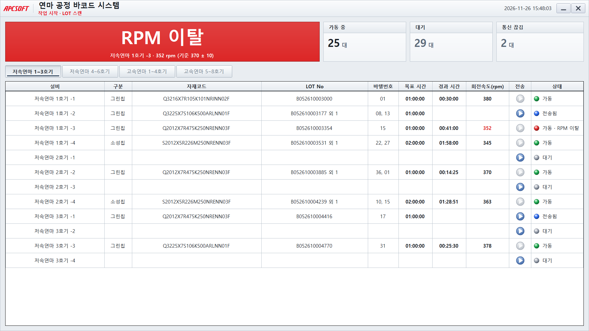
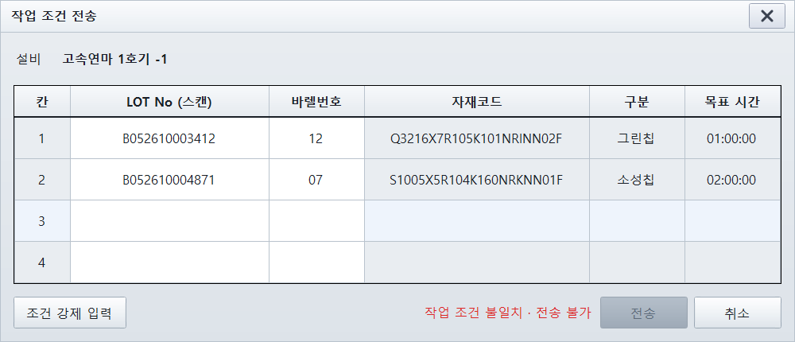
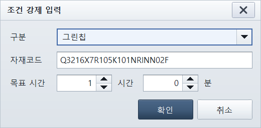

지금까지는 화면 요청·도메인 정보·UX 기준을 프롬프트에 자세히 적었습니다. 이번에는 고객사 요구사항 엑셀 경로와 작업 폴더·보고 형식만 주고, 화면 구성·기준값·UX 기준은 하나도 적지 않았습니다. 같은 프롬프트로 두 번 돌려 결과가 얼마나 갈리는지도 봤습니다.
| 실제 결정 | X1 | X2 |
|---|---|---|
| 메인 리스트에 바렐 칸을 나눠 표시(저속 B1·B2, 고속 2칸 × 2줄) | "LOT 외 1"로 접음 | 바렐번호를 한 칸에 "08, 13"으로 모음 |
| 바렐 1개 = LOT 1개, 같은 LOT을 두 칸에 넣으면 경고 | 조건 비교만 | 조건 비교만 |
| "담당자 비밀번호"는 조건 강제 입력이 아니라 시스템 설정 진입 | 미구현 | 엑셀 문구대로 강제 조건 입력 |
| 가동 클릭 자동 시작은 보류 | 구현 안 함 | 구현 안 함 |
| 스캐너 Enter가 경고창을 닫는 문제 해결 | 언급 없음 | render 멈춤으로 비슷한 함정을 겪음 |
엑셀 문구를 그대로 따르면 실제 결정과 다른 해석이 나옵니다(비밀번호). 이건 모델 탓이 아니라 엑셀에 없는 정보입니다. 엑셀만 줄 때는 확인 질문에 답하는 단계가 꼭 필요합니다.
| # | 항목 | X1 | X2 | 비고 |
|---|---|---|---|---|
| 1 | 3초 정보 맨 위 | ✓ | ✓ | X1 "알람 3건", X2 "RPM 이탈 · 352 rpm (기준 370 ± 10)" |
| 2 | 주 동작 스캔·큰 버튼 | ✓ | ✓ | 설비 선택 → 스캔 dialog |
| 3 | 메인이 막고 이유를 글로 | ✓ | ✓ | X1 버튼 왼쪽 상시 문구, X2 회색 아이콘 + 누르면 Warn |
| 4 | dialog 차단 | ✓ | ✓ | X1 경고창·미전송, X2 [전송] 꺼짐 + 하단 이유 |
| 5 | 도메인 핵심 | △ | △ | X1 메인에 바렐 칸 구조 없음 / X2 위치 × LOT 이중 구조 |
| 6 | 레이아웃 마무리 | ✓ | △ | X2 표 아래 1/5 빔, 전송 열이 아이콘뿐 |
| 7 | 빌드 0/0, 점검 0건 | ✓ | ✓ | |
| 8 | 요구 항목 누락 없음 | △ | ✓ | X1 비밀번호 강제 입력 누락 |
| 9 | 경계값 샘플 | ✓ | ✓ | 둘 다 시작 3분 제외 구간 샘플, X2는 상한 380 = 정상 |
| 10 | 지침 피드백 | ✓ | ✓ | 아래 표 |
| 합계 | 18 | 18 |
| 나온 곳 | 내용 |
|---|---|
| X1 | "한국어 .cs heredoc 금지"가 Python heredoc에도 해당하는지 없음. 실제로 치환이 실패했습니다. |
| X1 | render "표 아래 빔" 참고와 "정해진 목록은 그대로" 지침이 충돌. 탭마다 행 수가 다를 때 고정 높이 기준도 없음. |
| X2 | JudgeView와 FailureAnalysisView 중 고르는 기준 없음. 많은 설비(56)를 탭과 타일 중 어떻게 보일지 없음. |
| X2 | 스캔 dialog를 표 셀 입력(LotInputDialog)으로 할지 ApcScanBox로 할지 불분명. |
| X2 | CellEndEdit에서 모달 Warn을 BeginInvoke로 띄우면 render가 간헐적으로 멈춤. "스캔 중 경고는 BeginInvoke" 지침이 셀 편집 경로에서는 함정입니다. |





apc-field-ui 스킬로 고객사 요구사항 파일에 맞는 APCSOFT 현장 PC 프로그램을 만든다. 먼저 Skill 도구로 apc-field-ui 스킬을 불러 그 지침을 끝까지 따른다(Skill 도구가 없을 때만 Read로 `C:\Users\rladb\.claude\skills\apc-field-ui\SKILL.md`를 읽는다). 앱 exe를 실행했으면 끝나기 전에 닫는다. - 고객사 요구사항: C:\00W_FA\연마공정 바코드 시스템 구축 정보_R2.xlsx (읽기만 한다. C:\00W_FA의 다른 파일·폴더는 열지 않는다) - 작업 폴더: C:\00P_apc-field-ui\skill-test\demo-1126-x\X1\project (Git Bash: /c/00P_apc-field-ui/skill-test/demo-1126-x/X1/project) - render PNG: C:\00P_apc-field-ui\skill-test\demo-1126-x\X1\out\<형식이름>.png - 고객사 default. 사용자에게 질문할 수 없다. - 저장소의 다른 파일은 고치지 않는다. git 명령 금지. 끝나면 보고: 1) 만든 화면·dialog와 PNG 경로 2) 마지막 render 점검 건수, 빌드 경고·오류 수 3) UX 결정 3~5줄 4) 정한 기준값 5) 요구사항 파일에서 읽은 것과 화면에 반영하지 않은 것 6) 스킬 지침에서 막히거나 모호했던 점. 스킬이 확인 질문을 요구하면 그 형식대로 함께 보고한다.